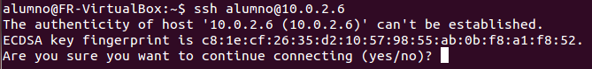
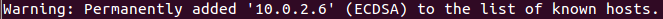
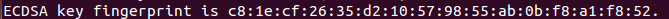
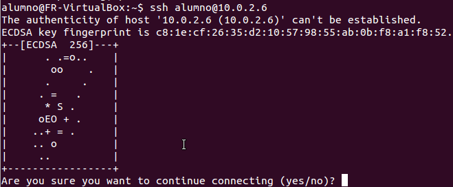

SSH
El ataque Man-In-The-Middle
Hecho por Marta Gómez Macías y Braulio Vargas López
¿Qué es SSH?
SSH es un protocolo para comunicar dos ordenadores de forma segura porque envía todos los datos encriptados a través de la red. Así, si alguien intercepta nuestra comunicación no podrá hacer nada con ella.
Comparación con Telnet
Telnet nos ofrece una funcionalidad muy parecida a SSH, pero, ¿cuál es la diferencia?
Seguridad
A diferencia de SSH, Telnet envía toda la comunicación en texto plano a través de la red.
Si alguien consigue interceptar nuestra comunicación podrá obtener nuestra contraseña de acceso al servidor.
Como se ve, hemos conseguido interceptar toda la comunicación Telnet, incluídos el usuario y contraseña de acceso.
En cambio, en SSH, si conseguimos interceptar la comunicación, veremos texto encriptado, por lo que no podremos obtener ninguna información.
Sin embargo, nada es perfecto...
Vunerabilidad de SSH: la primera conexión.
Al conectarnos por primera vez en SSH, recibimos una alerta mostrándonos el siguiente mensaje:
Dicho mensaje significa que SSH no conoce el servidor al que nos estamos conectando, y nos pregunta a nosotros si queremos permitir la conexión. En caso de decir que sí veremos el siguiente mensaje:

¿Qué es Man-In-The-Middle?
Es un ataque a través del cual conseguimos que el emisor de la comunicación nos envíe a nosotros todas las peticiones pensando que las está enviando al servidor. Nosotros después reenviamos dichas peticiones al servidor, haciendo de intermediario entre ambos.En la primera conexión SSH, no se comprueba el servidor al que se está realizando la conexión, por lo que podríamos, por error, conectarnos al servidor equivocado. Esta vulnerabilidad es aprovechada por este ataque.
¿Cómo evitarlo?
Podemos evitar conectarnos al servidor que no debemos comprobando su fingerprint.
Podemos comprobarlo de forma más visual activando el parámetro VisualHostKey en nuestro cliente
¿Y cuál es el fingerprint de mi servidor SSH?
Podemos encontrar el fingerprint usando el siguiente comando:
# ssh-keygen -lf /etc/ssh/ssh_host_ecdsa_key
Para obtener la VisualKey usamos el siguiente comando:
# ssh-keygen -lvf /etc/ssh/ssh_host_ecdsa_key
Realizando un ataque Man-In-The-Middle
En esta prueba tendremos tres máquinas: una máquina atacante, una máquina cliente y una máquina servidor. Además, usaremos un servidor SSH compatible con la versión 1 del protocolo.
Usaremos tres herramientas para ello:
- arpspoof
- dnsspoof
- sshmitm
La idea es convertir nuestra máquina atacante en un router por donde pasará todo el tráfico de la máquina cliente y la máquina servidor.

| Máquina | IP |
|---|---|
| Víctima | 10.0.2.6 |
| Servidor | 10.0.2.12 |
| Atacante | 10.0.2.5 |
| Gateaway | 10.0.2.1 |
Preparando la máquina atacante
En la máquina atacante introducimos los siguientes comandos:
# echo 1 > /proc/sys/net/ipv4/ip_forward
# arpspoof -i eth1 -t 10.0.2.6 10.0.2.1
# dnsspoof -i eth1 -f dns.txt src 10.0.2.6